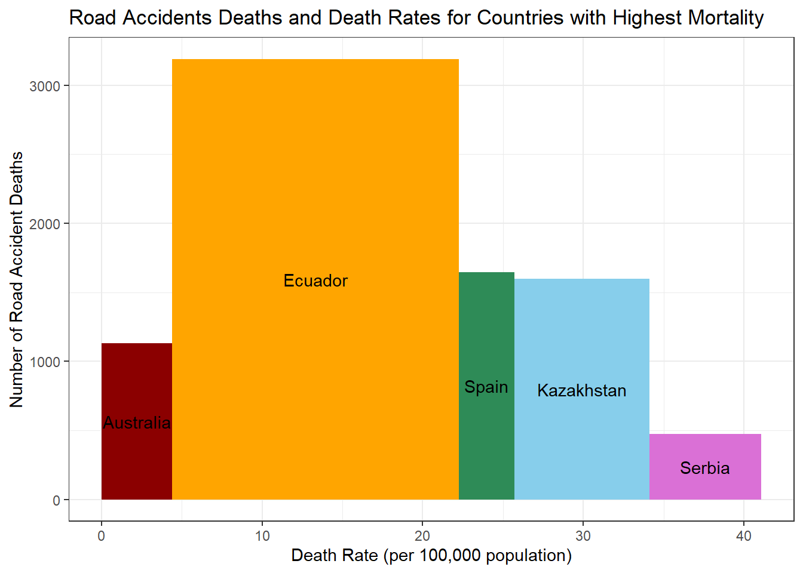

library(dplyr)Warning: package 'dplyr' was built under R version 4.3.3
Attaching package: 'dplyr'The following objects are masked from 'package:stats':
filter, lagThe following objects are masked from 'package:base':
intersect, setdiff, setequal, unionlibrary(ggplot2)Warning: package 'ggplot2' was built under R version 4.3.3roaddeaths <- read.csv("C:/Users/kxi220002/Downloads/Road traffic accidents.csv")
year_2021_data <- subset(roaddeaths, Year == 2021)
# Filter total deaths for all ages and both sexes
total_deaths_2021 <- year_2021_data %>%
filter(Sex == "All" & Age.Group == "[All]")
# Specify the number of top countries
T <- 5
# Get the top 5 countries with the highest road accidents in 2019
top_5_countries <- total_deaths_2021 %>%
top_n(T, Number)
top_5_countries Region.Code Region Country.Code Country Year Sex
1 OA Oceania AUS Australia 2021 All
2 CSA Central and South America ECU Ecuador 2021 All
3 EU Europe ESP Spain 2021 All
4 AS Asia KAZ Kazakhstan 2021 All
5 EU Europe SRB Serbia 2021 All
Age.group.code Age.Group Number
1 Age_all [All] 1131
2 Age_all [All] 3190
3 Age_all [All] 1645
4 Age_all [All] 1599
5 Age_all [All] 474
Percentage.of.cause.specific.deaths.out.of.total.deaths
1 0.6595945
2 3.0309365
3 0.3649522
4 0.8766303
5 0.3469427
Age.standardized.death.rate.per.100.000.standard.population
1 4.062440
2 17.879492
3 3.038423
4 8.617921
5 5.617079
Death.rate.per.100.000.population
1 4.402820
2 17.832711
3 3.475501
4 8.414541
5 6.935578#Some calculations for ploting
top_5_countries$wc <- cumsum(top_5_countries$Death.rate.per.100.000.population)
top_5_countries$sp <-top_5_countries$wc - top_5_countries$Death.rate.per.100.000.population
top_5_countries$mp <- with(top_5_countries,sp +(wc-sp)/2)
top_5_countries$wc[1] 4.40282 22.23553 25.71103 34.12557 41.06115top_5_countries$mp[1] 2.20141 13.31918 23.97328 29.91830 37.59336# plotting
custom_colors <- c("Australia" = "darkred", "Ecuador" = "orange",
"Spain" = "seagreen", "Kazakhstan" = "skyblue",
"Serbia" = "orchid")
ggplot(top_5_countries, aes(ymin= 0)) +
geom_rect((aes(xmin = sp, xmax = wc, ymax = Number, fill = Country))) +
geom_text(aes(x = mp, y = Number * 0.5, label = c("Australia", "Ecuador",
"Spain", "Kazakhstan", "Serbia"))) +
theme_bw() +
theme(legend.position = "none") +
labs(
title = "Road Accidents Deaths and Death Rates for Countries with Highest Mortality",
x = "Death Rate (per 100,000 population)",
y = "Number of Road Accident Deaths",
) +
scale_fill_manual(values = custom_colors)